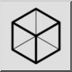

Toolbar / Icon:  Menu: Modify > Projection > Isometric Projection Shortcut: P, J Commands: isometric | pj
This tool creates isometric projections (and other types of projections) of the current selection in the drawing.